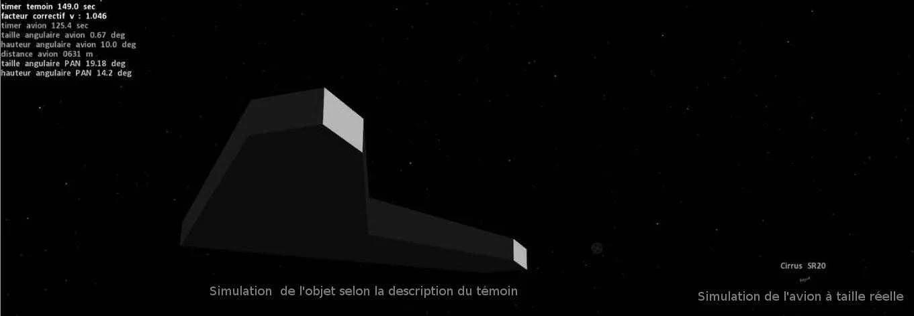

The author Passot, X.: J’ai vu un OVNI – Perceptions et réalités, Paris, Éditions du Cherche-Midi, , who was the head of GEIPANGEIPAN: groupe d’études et d’information sur les phénomène aérospatiaux non identifiés (Unidentified Aerospace Phenomena Study Group) from mid- to , describes his personal path starting from the systematic processing of UFO sighting reports leading to a qualification of the human testimony. UFO sighting reports are considered here as measure points of an unknown phenomenon; as with physical measures, human testimony is subject to some errors that the author tries to characterize. The question finally discussed is how to consider the unexplained cases, so called outliers in other sciences.
The common image of the UFO world is a collection of strange cases, still unexplained, supposed to be from an extraordinary origin. The reality that any determined ufologist can discover when starting to work on the large number of ordinary sighting reports is very different.
When starting my work in GEIPAN, I found hundreds of pending reports, most of them being commonplace. My predecessors were inclined to prioritize the apparently stranger reports, leaving the simplest cases lower in the stack. Because I wanted to send to the witnesses the investigation conclusions within a reasonable time, and to reduce the stack of reports, I decided on a systematic processing of the stack without considering the strangeness of the sighting reports. This “management decision” was in fact the choice of the scientific method to process a collection of measures: this approach of considering all samples of a phenomenon, without selection, is the most appropriate; processing only the strangest cannot lead to any relevant conclusion about the global phenomenon.
Some explained UFO sighting reports really changed my mind because the witnesses reports were drastically different from the reality, a reality which is well known in these perfectly identified cases. I will describe only three hereafter, but there are hundreds.
The young witness tells that, during an August Saturday night, he saw 30 orange shining shuttles silently overflying his village at low altitude for several minutes. He had the time to take quite a good video from his smartphone. He distinguishes many details: a dark brown structure with red and yellow lights. Later, he will add to his report a detailed drawing of a vessel quite similar to those from science fiction movies.
The investigation was quite easy: thanks to the video which displays only shining orange dots sliding in the sky, the assumption was that he clearly saw Chinese lanterns, following the wind in a direction consistent with the wind measured in a nearby meteorological station. A private investigator later found that a wedding was celebrated simultaneously in the village, and they launched numerous Chinese lanterns.
This perfectly identified case (class A in the GEIPAN nomenclature) demonstrates that the interpretation of an ambiguous stimulus by the human mind can sometimes be very far from reality. Of course, in this extreme case, the witness over-interpreted the scene, probably because he was an UFO enthusiast. Most of the witnesses of such flying lanterns describe simply “flying lights,” some others will describe small flying saucers in squadron or dark spaceships with lights; another remarkable case mentions flying metallic monsters.In the GEIPAN database: PAYNS (10) (Search Payns as a keyword)
This kind of case is quite common: a big fireball observed by thousands of witnesses. Ufologists despise these kind of cases, often used by skeptics to discredit the witnesses, but they should study the numerous sighting reports. The multiple reports of the observation of the same identified phenomenon offer a perfect tool to calibrate the human witness. The contents of the reports provide the following:
We have to conclude in this case that the human testimony cannot be considered as very accurate; however, all these witnesses were sincere, and most of them have a high level of education. The good question when considering a UFO case is: “What really happened ?” The processing of statistics is surely not a good approach because every witness is subject to some illusion, and some illusions are the same for everybody e.g., distance and size estimation of a bright light in the sky, and time duration of an impressive phenomenon; this creates some bias which cannot be quantified. The results of statistics will only give a mean value and distribution of the values, but it will be very far from the reality. The psychology of visual perception can help calibrate those sighting reports as a kind of “reverse transfer function” but is, of course, not reliable.
The human witness cannot be considered as a good recording instrument, although his testimony is precious: yes, something happened in the sky this day, at this time approximately, it was roughly moving from here to there, it was very bright and fast, and could be seen from a large area like that. But one cannot assert more than that! Colors, size, distance, shape should not be considered. The error margin is so wide.
Here is another very puzzling case because it opposes a sighting report of a very strange flying craft observed by a qualified driver during his working time, with a strong set of proof that a light plane was flying precisely there at the time.
The witness was driving a van on a highway, in the outer Paris suburbs; he saw a large motionless flying machine with flashing lights, at a low altitude, hundreds of meters away from the side of the road. He wrote a very detailed report very shortly after the event.
The GEIPAN found quite quickly that simultaneously a touring plane was training for night landings on the small airfield along the highway. As the witness didn't approve this explanation, GEIPAN was required to go further: a very skilled investigator was assigned on the case and then made an impressive job: he got the GPS report log of the van trajectory (which was available because it was a duty van), and the corresponding GPS report of the plane; then he built a dynamic simulation of the view of the plane from the van driver: the proof was established that the plane was at the same place as the flying craft described by the witness; it was seen apparently stationary because it was flying in the opposite direction of the van, as rotating around a virtual pivot.
The most puzzling finding in this case, which is the most documented case I’ve seen in GEIPAN, is the comparison of the reality, as simulated from the plane shape and its GPS path, and the witness report which was put on the same virtual model as hereafter:

The flying craft (left part of the picture) is described 30 times bigger than the plane (Cirrus, lower right), the lights are rectangular instead of circular and so on. This terrible comparison is not so surprising: the “Rising Moon test” gives the same results: ask a friend how many fingers he needs, arms outstretched, to hide the rising moon, when it seems so big; the usual reply is about 5 fingers (the hand) and some people say, “2 hands” (15° angle), which corresponds to a ratio of 30 compared to the real angular size of the moon (30’).
The human witness overestimates the size of most of the scenes he reports, especially if he was impressed, as if he used a telephoto-lens, but he forgets it when he writes the report! That’s why you are mostly disappointed by the poor snapshot you get from your smartphone when observing an impressive phenomenon such as the sunset or fireworks.
As many professionals of human testimony (lawyers, policemen, psychologists, insurers), we have to accept the fact that the human testimony is not fully reliable. The law of the ancient Roman empire was Testis unus, testis nullus, which means: Unique witness means no witness; the practical implication was that a judge could not convict a suspect from only one testimony. In all seriousness, it was more to avoid false testimonies than to avoid visual-perception illusions; in our UFO world, we also have to consider the possibility of false testimony (even if it is very rare), as well as hallucinations or the statements of a mythomaniac.
In any case, we should never consider a unique testimony sufficient to certify the reality of the report of a very strange phenomenon.
In many cases, we can be sure of the sincerity of a testimony, but we know now that it doesn't accurately describe the reality. What can we infer from a good testimony? What information can we take literally? What is to be corrected, and what should we forget? Does the “reverse transfer function” exist?
The long experience of thousands of sighting reports investigations and the results of research in psychology Mavrakis, D.: Les OVNI : Aspects psychiatriques, medico-psychologiques, sociologiques, Éditions universitaires européennes, , in vision, perception, memory, etc. makes it possible to affirm the following:
When interviewing a witness, you are impressed with the power of psychological shock some witnesses suffered during his observation; in some cases, it looks like a religious conversion or a mystical vision. The on-site interview by the investigator is sometimes a very strong encounter. However, the witness can only tell or repeat what he has in his mind, in his memory; the emotion he had could emphasize the scene he observed.
Since , GEIPAN uses a specific method to interview the witnesses: the “cognitive interview” which is a quite long non-directive interview, including some repetitions. This method has been proved to help the witness to remind some details of the events. However, the on-site interviews are requested by GEIPAN only when the remote investigation has not given any results: this is a check list of the usual misinterpretations: Chinese lanterns, moon, satellites, aircraft, fireballs which can be performed with the modern tools of meteorology, astronomy, radars ... This remote investigation is very often successful to explain the sighting reports of simple lights in the sky.
The confrontation between the witness’s emotion and the proposed reality found after investigation is confusing: the witness sometimes feels he is considered a liar or a mad person, he believes that the truth is hidden. The on-site investigator is supposed to only collect information, not to give an explanation; the final conclusion is sent directly by GEIPAN, without preparing the witness; the knowledge of the results of the investigation, in a short mail, is sometimes brutal for the witness who believes he has seen a very extraordinary phenomenon. In some extreme cases, I personally called the witness to tell him the result of the investigation; this difficult discussion has always been very positive; this should be done in every case where the testimony is far from the proposed reality.
Now that we have made the assertion that single testimony is weak, what should the perfect UFO sighting report be?
A testimony can bring many very interesting statements if correlated from other sources:
The perfect UFO sighting report should include several testimonies and photos or videos. This is the option taken by GEIPAN to classify a sighting report in the upper class D2: it requires at least two independent testimonies and a photograph or video. These conditions are not so stringent (a well prepared hoax could pass the filter!), but are hard enough to reduce today to null the number of cases in this class.
Until now, any investigated case with several witnesses and a photo or video has been identified.
GEIPAN investigators give to each sighting report a consistency value, between 0 and 1; this value has the same meaning as the margin of error in physical measures. The “perfect UFO sighting report” should have the value of 1, which means a very small margin of error.
The famous French close-encounters reports (e.g., Valensole , Trans-en-Provence , “L’amarante” Laxou ) are far from a high-consistency level: a lone witness, no photo nor video. The traces on the ground can be contested because they could have been there before the event.
In the GEIPAN classification, from A as fully explained, B as probably explained, C as insufficient consistency, to D as unidentified, the last class is of course the most scrutinized. The meaning of this D class evolved during the 40 years of the GEIPAN: in the early GEIPAN, it was meaning “deserves a thorough investigation”; then it meant “unidentified after investigation”; in , this class was including old cases still not investigated and some very strange cases with various levels of consistency. It was decided to split the D class into D1 for “unidentified with a moderate consistency” and D2 for “very high consistency,” without knowing if there were some existing D cases eligible for D2.
From , the old D cases were carefully, and slowly, revisited: most of them could be explained thanks to the modern tools of cartography, meteorology, and astronomy, and using the last results of the psychology of the visual perception, many were placed in C class because of too weak a consistency, and some stayed in the D class but in the D1 sub-class. The revisiting job is not achieved, 70 D cases are not yet selected for D1 or D2 class. Even if the revisiting job is not achieved, I do not think that some existing D case could be classified as D2.
On one hand, the number of old D cases decreased from because of this revisiting process, on the other hand, the total number of cases increased dramatically from because of the use of the Internet, which facilitates the submission of sighting reports. (the total number of published reports since was 1,200 in , 2,200 in , and 3,000 in ); consequently, the ratio between the decreasing number of D and D1 cases and the growing number of all cases lowered drastically, falling from 22% in to 3% today. In the recent cases, from , the ratio of D1 cases is close to 2%.
Let us remind that any D unidentified case, even D2, means only that GEIPAN does not know what the origin of the observed phenomenon was; the assumption of an alien visit is an option among numerous others, but the experience with old, revisited D cases shows that “unidentified” could mean “not yet identified” or “distorted or emphatic testimony,” much more so than “alien visit.”
If we consider the global UFO phenomenon as a set of measures, each one being subject to some error in the measure, some UFO reports are considered as abnormal (outliers) because of relating outstanding facts; they lead to extra investigations or extraordinary assumptions. But the greater you consider the margin of error of a testimony, the less you’ll find abnormal reports/measures.
Many very strange UFO sighting reports, when submitted to this filter, appeared to be only the result of visual illusions or enthusiastic : the outstanding related fact is no more than an outstanding testimony.
This article has been written from my experience with the GEIPAN team. I wish to heartfully thank my predecessors and the acting team, and the associated private investigators who told me about their long practical experience of UFO case investigations.